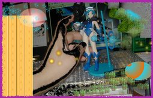

SRDX 奥さまは魔法少女 紅さやか （ほんのちょっとアレンジ）

以前のクルージェと同じものですが、いつもオリジナリティのかけらのない物ばかりでは申し訳ない上に、フィギュア写真ばかりでも申し訳ないので、今回は遊びも兼ねていろいろなアレンジを組みあわせてみました。フィギュアについては以前のページをご覧ください。 背景はいろいろあって説明しづらいので、わかる人だけわかってください。アレンジはGIMPで行っています。 更新：2006-05-07 初公開：2006年05月07日 10:56:52 最新版：2006年05月07日 11:16:10
Links:
クルージェ: http://jrf.cocolog-nifty.com/column/2006/01/post_14.html
GIMP: http://www.gimp.org/ (hbm)